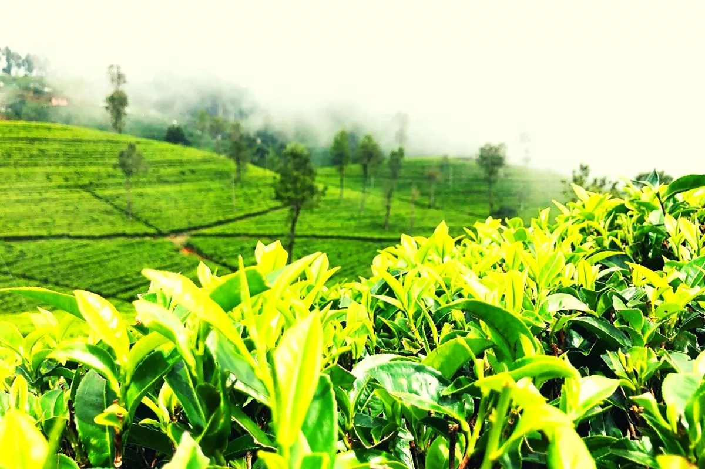

How to choose the best type of tea

How to recognize fine tea
The way it looks
After the processing of tea high quality tea leaves should look well. If tea leaves look like dusty or crumbly then they are not upto the level and they should be sturdy and smooth as well for the feel, if they crumble when touched that means tea leaves have been overdried.
Fragrance of tea
Processed tea leaves give out a distinct scent like a grassy and earthy. If it's a fading light scent that barely hits nose that means tea is getting old or low of quality. Depending on the type the scent differs.
Flavour of the type
Like said before different tea types have different flavours so high quality green tea will taste like bright and refreshing and black tea will taste more strong and intense than the green tea. But if you dont feel the taste much then you are drinking old tea or low quality tea.